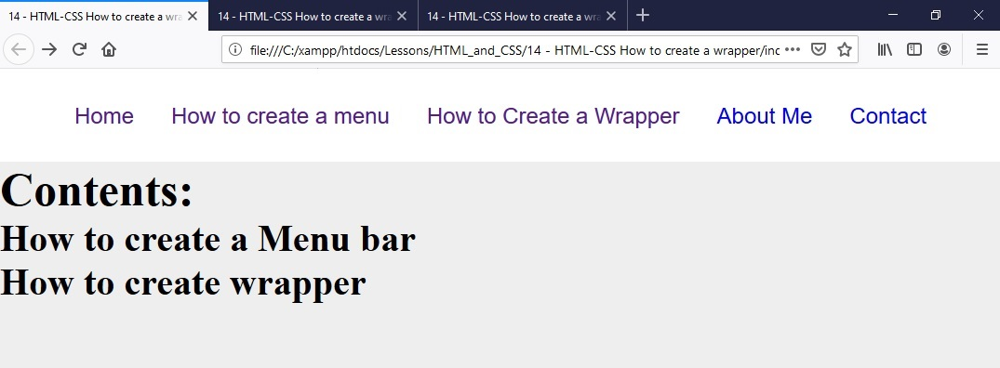
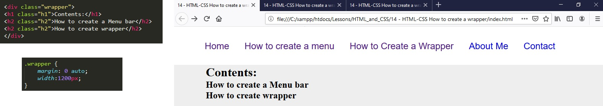

In this lesson we are going to learn how to create a wrapper for our website.
13. A wrapper can be used to put content inside of a box so that it can be set with left and right indent. At the moment we can see that there is no wrapper.
14. We just put the contents that we want towrap in div tags and give it a class then set the CSS code with a left margin of 0 and to auto centre. finally we set the width.
